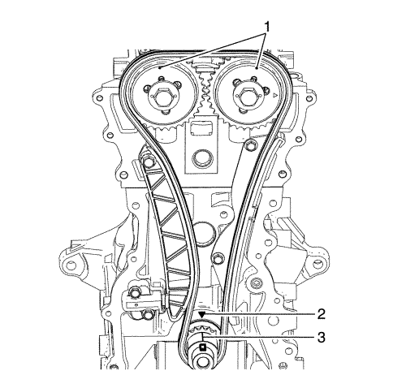
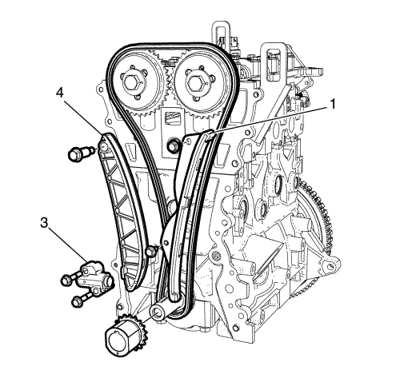
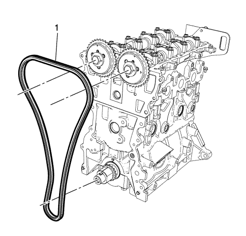
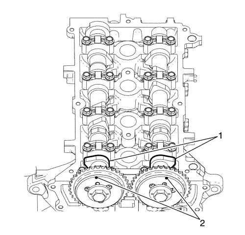
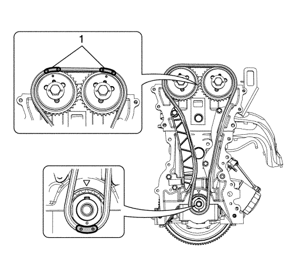
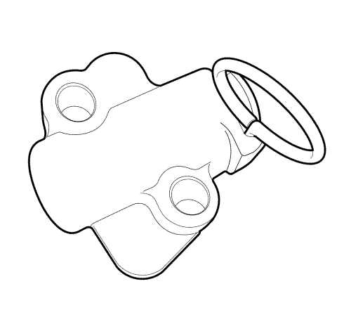

Sustitución y ajuste de la cadena de distribución del árbol de levas
Herramientas especiales
EN-49073 Pasador del tensor de cadena de distribución
Si desea informarse sobre herramientas regionales equivalentes, consultar Herramientas especiales .
Procedimiento de desmontaje
- Desmonte la cubierta delantera del motor uniformemente por todos los lados, con una herramienta adecuada. Consultar Desmontaje de la tapa delantera del motor y de la bomba de aceite .
- Introduzca el perno del compensador del cigüeñal al cigüeñal.

- Ajuste el motor al TDC. Ajuste el cigüeñal en el sentido de rotación del motor al TDC de la carrera de combustión del cilindro 1.
- Alinee la marca triangular de alineación (2) con la marca (3) de alineación del cigüeñal.
- Asegúrese de que la marca (1) de ambos piñones del árbol de levas esté correctamente colocada.

- Desmonte el tensor (3) de la cadena de distribución.
- Desmonte la zapata de la cadena de distribución izquierda (4).
- Desmonte la guía derecha (1) de la cadena de distribución.

- Desmonte la cadena de distribución.
Procedimiento de montaje

- Asegúrese de que los lóbulos del árbol de levas (1) se encuentran en posición de punto muerto.

- Instale la cadena de distribución tras alinear la marca (1) del piñón del árbol de levas y de la cadena de distribución.
- Alinee la marca de distribución del piñón del cigüeñal y de la cadena de distribución.

- Presione la palanca del tensor de la cadena de distribución y fíjela instalando el pasador del tensor de la cadena de distribución EN-49073.
Precaución: Consulte Precaución con las fijaciones en la sección Prólogo
- Monte la guía de la cadena de distribución (1). Y apriete los pernos de retención de la guía de cadena de distribución a 10 N·m (89 lib. pulg.).
- Monte la zapata de la cadena de distribución (4). Y apriete los pernos de retención de la palanca de cadena de distribución a 10 N·m (89 lib. pulg.).
- Monte el tensor de la cadena de distribución (3). Y apriete los pernos de retención del tensor de cadena de distribución a 10 N·m (89 lib. pulg.).
- Monte la tapa delantera del motor. Consultar Desmontaje de la tapa delantera del motor y de la bomba de aceite .
| © Copyright Chevrolet. Reservados todos los derechos |